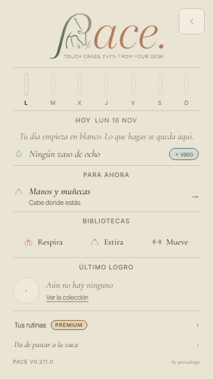
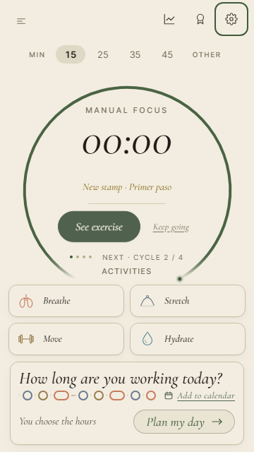
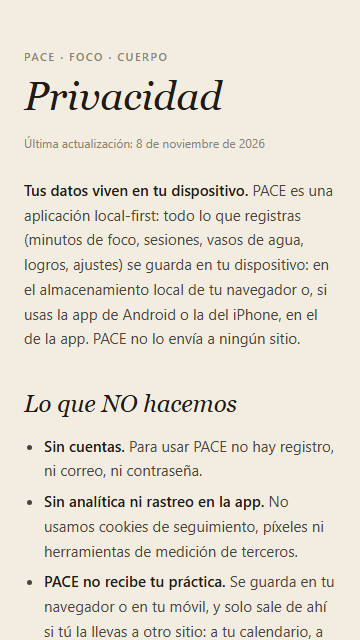
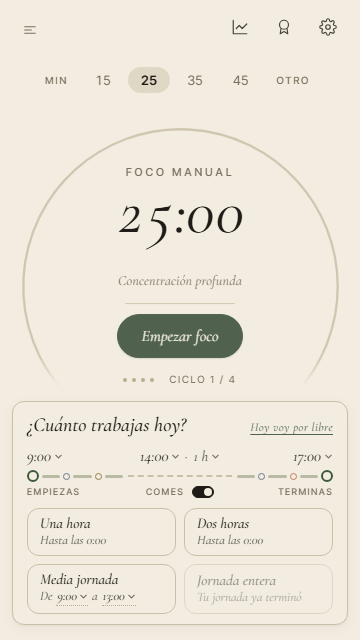
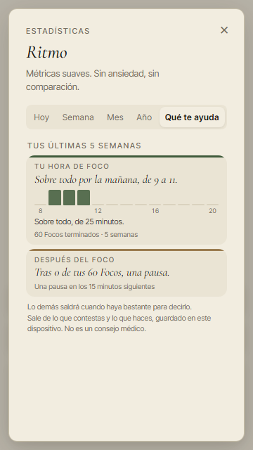
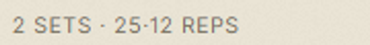

PACE · caza de fallos · 19 nov. · 0.211.0
Once cosas que arreglar
He recorrido la 0.211.0 como quien la usa: en el móvil y en el ordenador, de noche, en inglés, sin conexión y con dos pestañas. Salen cinco fallos y seis detalles. No hay nada montado.
Contesta en una línea, por ejemplo: 1 sí · 2 sí · 3 sí · 4A · 5A · 6A · 7 sí · 8A · 9A · 10A · 11A
Eso es todo lo recomendado; «todo lo recomendado» también vale. Lo que no quieras, «no».
Fallos
Cosas que hoy salen mal. Solo hay un arreglo razonable: dime sí o no.
1El panel del móvil se abre solo al volver
360 × 640, nada más abrir PACE.
Qué pasa
Si cierras PACE con el panel abierto, la vez siguiente arranca con el panel tapando el reloj. También le pasa a quien viene del ordenador, donde el panel se queda abierto: las testers de la 0.191.1 lo tienen guardado así.
Por qué importa
Lo primero que ves no es el Foco, y hay que cerrar el panel cada vez.
¿Arreglar? Recomiendo sí. En el móvil, PACE abre siempre con el panel cerrado. En el ordenador sigue recordando cómo lo dejaste.
2El panel no se cierra con el teclado

Después de pulsar Escape: sigue abierto.
Qué pasa
En el móvil y en la tableta, con teclado o con lector de pantalla, Escape no cierra el panel. Y al tabular, el foco se va a los botones que quedan detrás sin verse, como «Ver estadísticas» o «Empezar foco».
Por qué importa
Quien usa PACE sin dedo ni ratón (una tableta con teclado, o un lector porque no ve bien) se pierde. Las demás ventanas de PACE ya lo hacen bien; falta el panel.
¿Arreglar? Recomiendo sí. El panel se porta como las demás ventanas: Escape lo cierra, el tabulador se queda dentro y al cerrarlo vuelves al botón del menú.
3El aviso del sello sale en el idioma de antes

PACE en inglés: «New stamp · Primer paso».
Qué pasa
Cambias de idioma sin recargar, aquí o en otra pestaña, y al ganar un sello el aviso sale mezclado: «New stamp · Primer paso». Lo mismo pasa con el aviso del código.
Por qué importa
Es el momento que celebra un logro, y sale a medias en el otro idioma.
¿Arreglar? Recomiendo sí. El aviso mira el idioma en el momento de salir, no el de cuando se abrió PACE.
4Ajustes del móvil pide scroll si los avisos están bloqueados
 360 × 640 en inglés. En español, igual.
360 × 640 en inglés. En español, igual.
Qué pasa
Si el navegador tiene bloqueados los avisos de PACE, bajo «Aviso al terminar» sale «Notificaciones bloqueadas…». Esa línea suma 12 px a 360 × 640, en los dos idiomas, y la última fila, «Tus datos», queda cortada. A 1280 × 720 suma 6 px.
Por qué importa
Rompe tu regla de que los Ajustes del móvil caben sin scroll, y «Tus datos» es donde se hace la copia.
- A
Una línea más corta, en el sitio de la pequeña. Recomendada Sustituye a la línea pequeña que ya hay bajo «Aviso al terminar» y no suma altura.
Maqueta de textoAviso al terminarFoco · bloqueados en este navegador
- B
La línea se queda y Ajustes se aprieta. Cuando sale, las filas se juntan un poco, como ya pasa en pantallas bajas.
5En inglés, Privacidad y Seguridad abren en español

Abierta desde PACE en inglés.
Qué pasa
Con PACE en inglés, los enlaces a Privacidad y a Seguridad abren la página en español. El inglés está al final, unos 8000 px más abajo en el móvil, y nada lo dice.
Por qué importa
Quien no lee español cree que no hay versión en inglés. Son las páginas que miran la tienda y la gente antes de pagar.
- A
La misma página, con salto al inglés. Recomendada Un enlace «English ↓» arriba, y la app en inglés abre directamente la parte en inglés.
- B
Una página aparte en inglés. Más limpia de leer, pero son dos páginas que hay que mantener iguales.
Detalles
Funcionan, pero se leen mal o confunden. Donde hay más de una manera, van con letra.
6De noche, dos losetas dicen lo mismo

A las 23:30.
Qué pasa
A las 23:30, «Una hora» y «Dos horas» dicen las dos «Hasta las 0:00», y «Dos horas» da en realidad 30 min. A las 22:45, «Dos horas · Hasta las 0:00» es 1 h 15.
Por qué importa
Eliges dos horas y te da media.
- A
Decir lo que dura de verdad. Recomendada Las dos siguen y se puede aprovechar la última media hora.
Maqueta de texto · 23:30Una horaHasta las 0:00 · 30 min
Dos horasHasta las 0:00 · 30 min
- B
Apagar la que ya no cabe entera, como hoy «Jornada entera · Tu jornada ya terminó». A las 23:30 se apagarían las dos.
Maqueta de texto · 23:30Una horaYa no cabe hoy
Dos horasYa no cabe hoy
7Los logros dicen «Pomodoro»
 «Completa tu primer Pomodoro».
«Completa tu primer Pomodoro».
Qué pasa
«Completa tu primer Pomodoro», «12 Pomodoros», «8 Pomodoros en un día». En el resto de la app se dice «Foco»: quitaste «pomodoro» del aro. En inglés pasa igual.
Por qué importa
Dos nombres para lo mismo.
¿Cambiar? Recomiendo sí. «Completa tu primer Foco», «12 Focos», «8 Focos en un día», y en inglés la palabra que ya usa la app.
8«Tras 0 de tus 60 Focos, una pausa»

Estadísticas › Qué te ayuda.
Qué pasa
Si nunca has parado justo después de un Foco, la tarjeta «Después del Foco» dice «Tras 0 de tus 60 Focos, una pausa».
Por qué importa
Con el cero suena a error, aunque el dato sirve: dice que no estás parando.
- A
Otra frase cuando es cero. Recomendada Se queda el dato y se lee bien.
Maqueta de textoDespués del Foco
Aún no has parado justo después de un Foco.
- B
No enseñar la tarjeta hasta que haya al menos una pausa después de un Foco.
9«Otro» con más de 180 minutos no hace nada
 Tras escribir 999: vuelve a 25.
Tras escribir 999: vuelve a 25.
Qué pasa
En «Otro», si escribes más de 180 (aquí 999), PACE lo ignora sin decir nada y vuelve a 25. Si escribes menos de 5, en cambio, lo sube a 5.
Por qué importa
Parece que no funciona.
- A
Igual en los dos lados. Recomendada 999 se queda en 180, como 3 ya sube a 5.
- B
Decirlo. El número no cambia y debajo sale «Entre 5 y 180 min» hasta que lo corriges.
10«25·12 reps» parece una multiplicación

Una rutina de Mueve, en inglés: «2 sets · 25·12 reps».
Qué pasa
Una rutina de dos series con distintas repeticiones dice «2 series · 25·12 reps».
Por qué importa
El punto se lee como «por»: 300 repeticiones.
- A
Con «y». Recomendada En inglés, «25 and 12 reps».
Maqueta de texto2 series · 25 y 12 reps
- B
Con coma. Más corto.
Maqueta de texto2 series · 25, 12 reps
11El resumen del mes mezcla letras y usa decimales
Estadísticas › Mes, la línea de abajo.
Qué pasa
La línea dice «Foco 20,6h · Respira 27min · Cuerpo 1,1h · 78 vasos». El «78» va con la letra de los rótulos, no con la de las cifras, y las horas van en decimales.
Por qué importa
«20,6h» obliga a hacer la cuenta (son 20 h 36 min), y el 78 parece un nombre.
- A
Horas y minutos, y el 78 como las demás cifras. Recomendada
Maqueta de textoFoco 20 h 36 min · Respira 27 min · Cuerpo 1 h 6 min · 78 vasos
- B
Solo el 78 y un espacio antes de la unidad. Las horas siguen en decimales.
Maqueta de textoFoco 20,6 h · Respira 27 min · Cuerpo 1,1 h · 78 vasos
Probado y sin problema
- Ningún error en la consola en todo el recorrido.
- Sin conexión funciona, Respira incluido.
- Dos pestañas a la vez se ponen de acuerdo: Foco, agua e idioma.
- La visita guiada entera, e Hidrátate por encima de la meta y a medianoche.
- La web (inicio, /premium, /beta, /recuperar, /gracias, /desistir y la de error) a 360 y 1280, en español e inglés, clara y oscura, sin scroll de lado.
- El gris claro del texto ya lo elegiste tú; no lo vuelvo a proponer.
Lo que no he probado
- Nada está montado: las fotos son la 0.211.0 tal cual.
- Las líneas con borde de puntos son maquetas de texto de esta página, no fotos de la app. Se miden en el móvil al montar, en los dos idiomas.
Contesta en una línea: 1 sí · 2 sí · 3 sí · 4A · 5A · 6A · 7 sí · 8A · 9A · 10A · 11A
Once preguntas. Cambia la letra o pon «no» donde no estés de acuerdo.